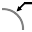

Geometrian muuttaminen
TecZone Bend on tehokas 2D-piirustusten editori geometrian muokkaukseen, puhdistukseen tai lisäämiseen. Luonnostilaan voi siirtyä pikanäppäimellä S. Editori näyttää osan levitysnäkymässä.
Napsauta sommitelmassa luonnoksen kuvaketta Sketch  tai paina
pikanäppäintä S.
tai paina
pikanäppäintä S.
Näyttöön avautuu valikko, jossa on erilaisia kuvakkeita levityksen käsittelyä varten:

Piirustusten paneeli
| Kuvake | Symboli | Merkitys |
|---|---|---|
|
Select |
Objektien, viivojen, merkintöjen jne. valinta |
|
Line |
Viivan piirtäminen |
|
Connected line |
Piirtää vapaasti valittavan määrän viivoja |
|
Parallel |
Piirtää jonkin viivan kanssa yhdensuuntaisen viivan |
|
Normal |
Piirtää käyrään tangentin |
|
Bendline |
Piirtää viivaan normaalin |
|
Center-Point Arc |
Taivutuslinjan piirtäminen |
|
2-Point Arc |
Piirtää kaaren keskipisteestä, alkupisteestä ja loppupisteestä |
|
3-Point Arc |
Piirtää ympyrän kaaren kahden määritellyn pisteen (alku- ja loppupisteen) kautta |
|
Tangent Arc |
Piirtää kaaren, joka on tangentiaalinen piirroselementteihin nähden |
|
Rectangle |
Piirtää suorakaiteen |
|
Center-Point Rectangle |
Piirtää suorakaiteen keskipisteestä |
|
Circle |
Piirtää ympyrän. Valitse ympyrän keskipiste ja määrittele säde vetämällä osoitinta tai syötä säteen arvo |
|
2-Point Circle |
Piirtää ympyrän kehän perusteella. Valitse piste kehältä, sitten toinen piste ja tämän jälkeen vielä kolmas piste. |
|
3-Point Circle |
Piirtää ympyrän kehän perusteella. Valitse piste kehältä, sitten toinen piste ja tämän jälkeen vielä kolmas piste. |
|
2-Tangent Circle |
Piirtää ympyrän, jossa on kaksi tangenttia. Syötä ympyrän halkaisija, valitse sitten ensimmäinen tangentti ja tämän jälkeen toinen tangentti. |
|
3-Tangent Circle |
Piirtää ympyrän, jossa on kolme tangenttia. Syötä ympyrän halkaisija, valitse ensimmäinen tangentti, sitten toinen tangentti ja tämän jälkeen vielä kolmas tangentti. |
|
Inscribed Polygon |
Piirtää ympyrän, jossa on kolme tangenttia. Syötä ympyrän halkaisija, valitse ensimmäinen tangentti, sitten toinen tangentti ja tämän jälkeen vielä kolmas tangentti. |
|
Circumscribed Polygon |
Piirtää monikulmion. Määrittele sivujen lukumäärä ja valitse keskipiste sekä jonkin sivun keskikohta |
|
Edge Polygon |
Piirtää monikulmion. Määrittele sivujen lukumäärä ja jonkin sivun alkupiste ja loppupiste |
|
Fillet |
Pyöristää kahden piirroselementin leikkauspisteeseen muodostuvan nurkan syötettyä sädettä käyttäen siten, että tämän tuloksena muodostuu tangentiaalinen kaari |
|
Chamfer |
Luo viisteen kahden piirroselementin leikkauspisteeseen muodostuvaan nurkkaan |
|
In-Fillet |
Pyöristää kahden piirroselementin leikkauspisteeseen muodostuvan nurkan syötettyä sädettä käyttäen |
|
Corner Step |
Leikkaa kahden piirroselementin leikkauspisteeseen muodostuvasta nurkasta suorakaiteen. Suorakaiteen koon voi syöttää etukäteen. |
|
Edge Recess |
Luo suorakulmaisen vapaan leikkauksen. Sinun on syötettävä nurkan etäisyys, vapaan leikkauksen syvyys ja valittava tämän jälkeen nurkka. |
|
Edge U-Cut |
Luo pitkittäisreiän muotoisen vapaan leikkauksen. Sinun on syötettävä nurkan etäisyys, vapaan leikkauksen leveys, vapaan leikkauksen syvyys ja valittava tämän jälkeen nurkka. |
Edge V-Cut |
Luo kolmionmuotoisen vapaan leikkauksen. Sinun on syötettävä nurkan etäisyys, vapaan leikkauksen leveys, vapaan leikkauksen syvyys ja valittava tämän jälkeen nurkka. |
|
|
Keyslot |
Luo ympyrään kiilauran syötettyjä arvoja käyttäen. |
|
Fillet 3-Seg |
Pyöristää kolme yhdistettyä piirroselementtiä |
|
Extend |
Valitse jatkettava piirroselementti |
|
Trim |
Valitse poistettava piirroselementti |
|
Join |
Käytetään useiden erillisten polyline-objektien leikkaamiseen ja liittämiseen yhdeksi objektiksi |
|
Offset |
Siirtää yhtä tai useampaa piirroselementtiä, luonnosmallin reunoja tai mallin pintoja määritellyn matkan |
|
Move |
Valitse piirroselementti näppäimellä ctrl, valitse referenssipiste ja siirrä piirroselementtiä |
Rotate |
Valitse piirroselementin kiertämistä varten ensin piirroselementti näppäimellä ctrl. Valitse sitten kiertokeskipiste ja sen jälkeen alkupiste sekä loppupiste. |
|
|
Scale |
Valitse piirroselementin skaalausta varten ensin piirroselementti näppäimellä ctrl. Valitse sitten peruspiste ja sen jälkeen referenssiloppupiste. |
Mirror |
Valitse piirroselementin peilaamista varten ensin piirroselementti näppäimellä ctrl. Valitse sitten peilausviivan alkupiste ja sen jälkeen peilausviivan loppupiste. |
|
|
Rectangle Array |
Komennon avulla voi luoda useita referensoituja kopioita yhdestä tai useammasta piirroselementistä taulukon muotoon. Elementit voi tällöin sijoittaa tasaisin välein yhdelle tai kahdelle lineaariselle viivalle. Napsauta taulukkoa ja syötä haluamasi arvot |
|
Polar Array |
Komennon avulla voi luoda useita referensoituja kopioita yhdestä tai useammasta piirroselementistä ympyrän muotoon. Elementit voi tällöin sijoittaa tasaisin välein akselin ympärille. Napsauta ympyräkuviota ja syötä haluamasi arvot |
|
Union |
Komennon avulla pinnat voi yhdistää toisiinsa valitsemalla vähintään kaksi suljettua piirroselementtiä |
|
Intersection |
Komennon avulla voi luoda piirroselementtien leikkauksen valitsemalla vähintään kaksi suljettua elementtiä |
|
Subtraction |
Komennon avulla pinnasta voi leikata alueen valitsemalla vähintään kaksi suljettua elementtiä |
Copy Notch |
Tämän työkalun avulla kolosta voi tehdä useita kopioita reunaa pitkin. Syötä ensin kopioiden väli ja koloista tehtävien kopioiden määrä. Valitse tämän jälkeen kolo napsauttamalla loven vieressä olevia kaksiviivaisia segmenttejä |
|
|
Delete Notch |
Voit poistaa tämän työkalun avulla kolon nurkasta tai viivasegmentistä. Valitse tämän jälkeen kolo napsauttamalla loven vieressä olevia kaksiviivaisia segmenttejä, jolloin kolo katoaa |
|
Mirror Notch |
Voit peilata tämän työkalun avulla kolon nurkkaan tai viivasegmenttiin. Valitse tämän jälkeen kolo napsauttamalla loven vieressä olevia kaksiviivaisia segmenttejä, jolloin toiminto peilaa kolon |
|
Spline |
Voit aloittaa uuden splinikäyrän napsauttamalla käyrän alkupistettä. Toiminto luo tämän jälkeen splinikäyrän napsauttaessasi seuraavia pisteitä. Jos haluat sulkea splinikäyrän, paina ALT-näppäintä ja napsauta sen jälkeen kohtaa |
|
Profile |
Voit luoda profiilin syöttämällä pohjan pituuden, laipan korkeuden, paksuuden, laipan kulman, sisäsäteen ja painamalla tämän jälkeen Enter-näppäintä |
|
Text |
Piirtää tekstin, jonka laserkone merkitsee osaan. Napsauttaessasi tätä työkalupainiketta, syöttöpalkkiin ilmestyy tekstin, koon ja kiertokulman syöttämiseen tarkoitettuja kenttiä. |
|
Truetype Text |
Käytetään minkä tahansa TrueType-kirjasinlajin merkkien muotojen valitsemiseen ja muuntamiseen polyline-objekteiksi. Lasertyökaluja voi tämän jälkeen käyttää näiden polyline-objektien kohdalla, jolloin objektien leikkaaminen on mahdollista. Kun tätä painiketta napsautetaan ensimmäisen kerran, kirjasinlajin valintaikkuna avautuu, jolloin voit valita tekstissä käytettävän kirjasinlajin |
|
Common Shape |
Komennon avulla voi luoda useita yhteisiä muotoja ja liittää ne piirustukseen. Napsautettuasi tätä painiketta näyttöön avautuu muodon valintaan tarkoitettu valintaikkuna, jolloin voit valita haluamasi muodon ikkunan sisältämien yleisten muotojen valikoimasta |
Simple Dimension |
Valitse ensimmäinen mitoituspiste, sitten toinen mitoituspiste ja asemoi mitoitusviiva |
|
|
Baseline Dimension |
Valitse ensimmäinen mitoituspiste, sitten toinen mitoituspiste ja asemoi mitoitusviiva |
|
Continue Dimension |
Valitse ensimmäinen mitoituspiste ja sitten toinen mitoituspiste. Asemoi tämän jälkeen mitoitusviiva ja valitse seuraava mitoituspiste |
|
Horizontal Ordinate Dimension |
Ordinaatan mitat ovat joukko mittoja, joiden mittaus tapahtuu piirustuksen nolla-ordinaatasta lukien. Valitse referenssipiste ja aseta mitoitus |
|
Vertical Ordinate Dimension |
Ordinaatan mitat ovat joukko mittoja, joiden mittaus tapahtuu piirustuksen nolla-ordinaatasta lukien. Valitse referenssipiste ja aseta mitoitus |
|
Angular Dimension |
Luo mitoituksen kulmalle. Valitse ensimmäinen viiva ja sitten toinen viiva, joiden kohdalle haluat mitoittaa kulman |
 |
Radius Dimension |
Luo mitoituksen säteelle. Valitse ympyrä, johon haluat mitoittaa säteen. Mitoita halkaisija painamalla näppäintä ctrl |
Center Point Radius Dimension |
Luo mitoituksen, jossa on jatkuva johtoviiva säteelle. Valitse ympyrä, johon haluat mitoittaa säteen. Mitoita halkaisija painamalla näppäintä ctrl |
|
|
Callout Dimension |
Työkalun avulla piirustukseen voi lisätä huomautuksia tekstiruutujen muodossa. Tekstiruudun voi luoda kirjoittamalla näytettävän tekstin, napsauttamalla kohtaa, johon nuolen on määrä osoittaa, ja napsauttamalla vielä kohtaa, johon teksti on määrä sijoittaa. |
|
Segment Dimension |
Työkalun avulla voi lisätä mitoituksen suorille ja kaareville segmenteille. Napsauta mitoitettavaa segmenttiä ja sen jälkeen kohtaa, johon mitta on määrä sijoittaa. Vaihtoehtoisesti voit asemoida mitan automaattisesti pitämällä näppäintä painettuna ja napsauttamalla mitoitettavaa segmenttiä. |